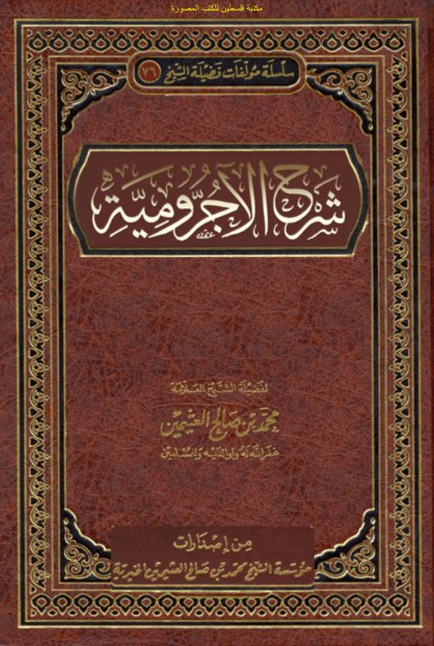

Downloads need an internet connection.
شرح الآجرومية شرح فضيلة الشيخ مجمد بن صالح بن عثيمين
Authors: محمد بن صالح العثيمين
Publishers: إصدارات مؤسسة الشيخ ابن عثيمين الخيرية
**▫️ العنوان: شرح الآجرومية شرح فضيلة الشيخ مجمد بن صالح بن عثيمين** ▪️ المؤلف: #محمد_بن_صالح_بن_عثيمين ▫️ الناشر: #إصدارات_مؤسسة_الشيخ_ابن_عثيمين_الخيرية ▪️ بلد النشر: القصيم، #السعودية ▫️ الطبعة: 1 ▪️ عدد الأجزاء: 1 ▫️ الصفحات: 539 ▪️ نوع الوعاء: #كتاب ▫️ التصنيف الرئيسي: #اللغة_العربية ▪️ التصنيف الفرعي: #نحو_وصرف ۪